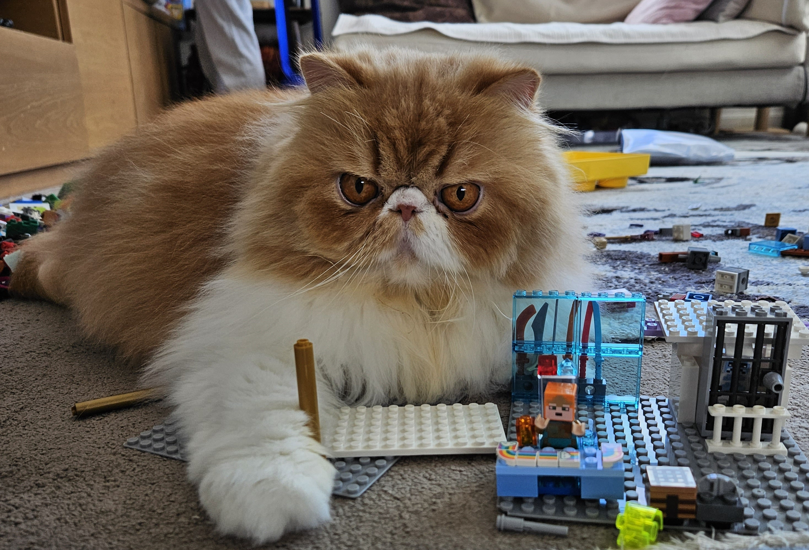
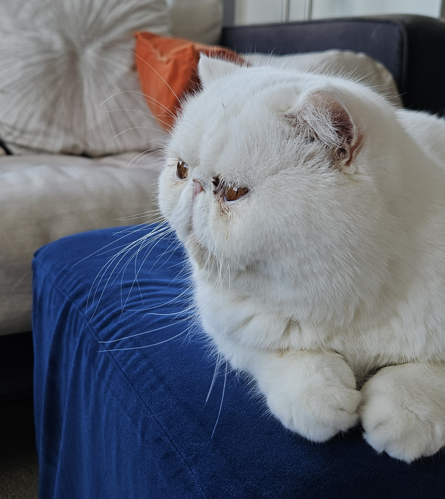
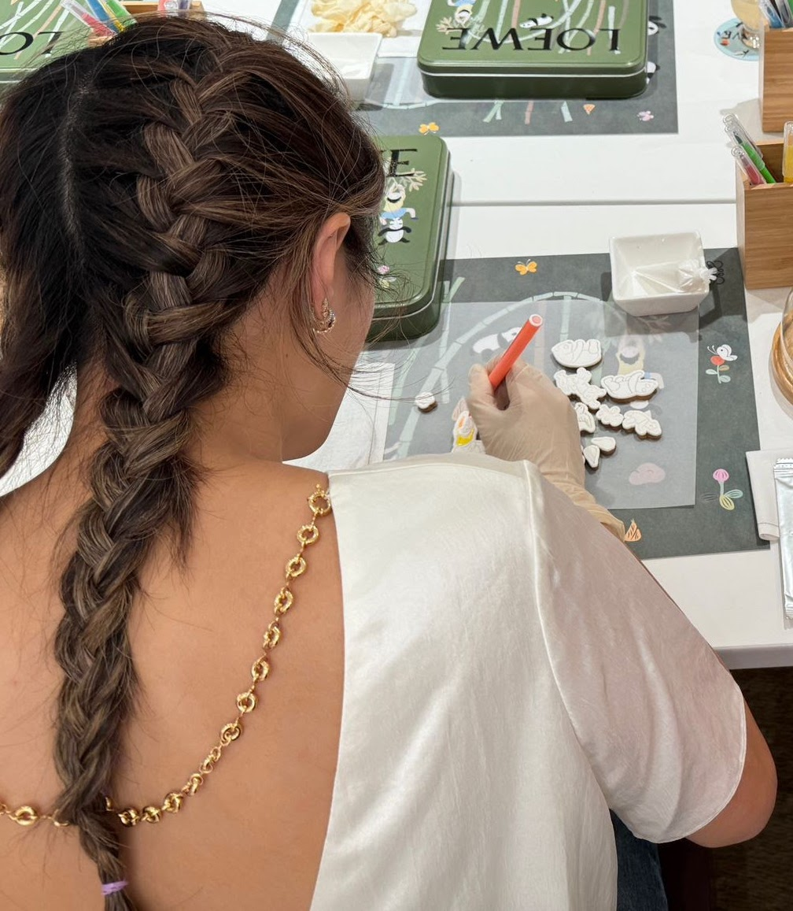
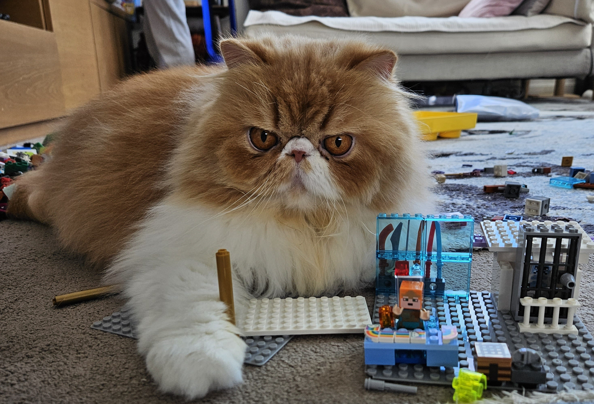
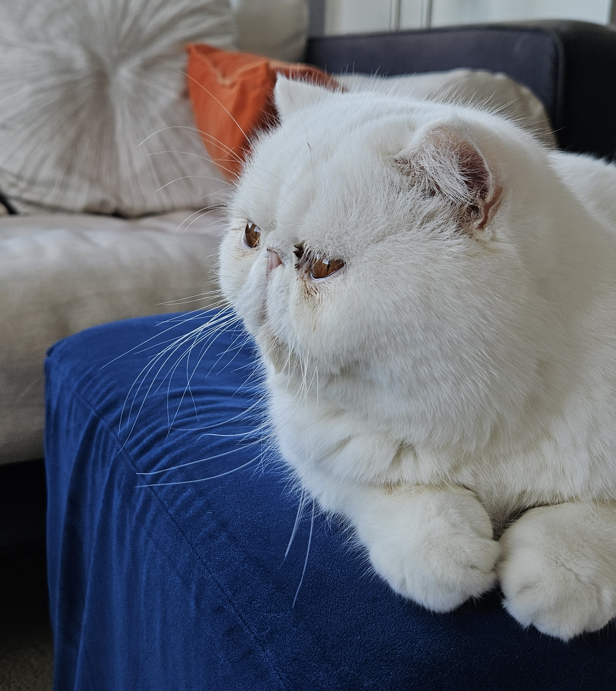
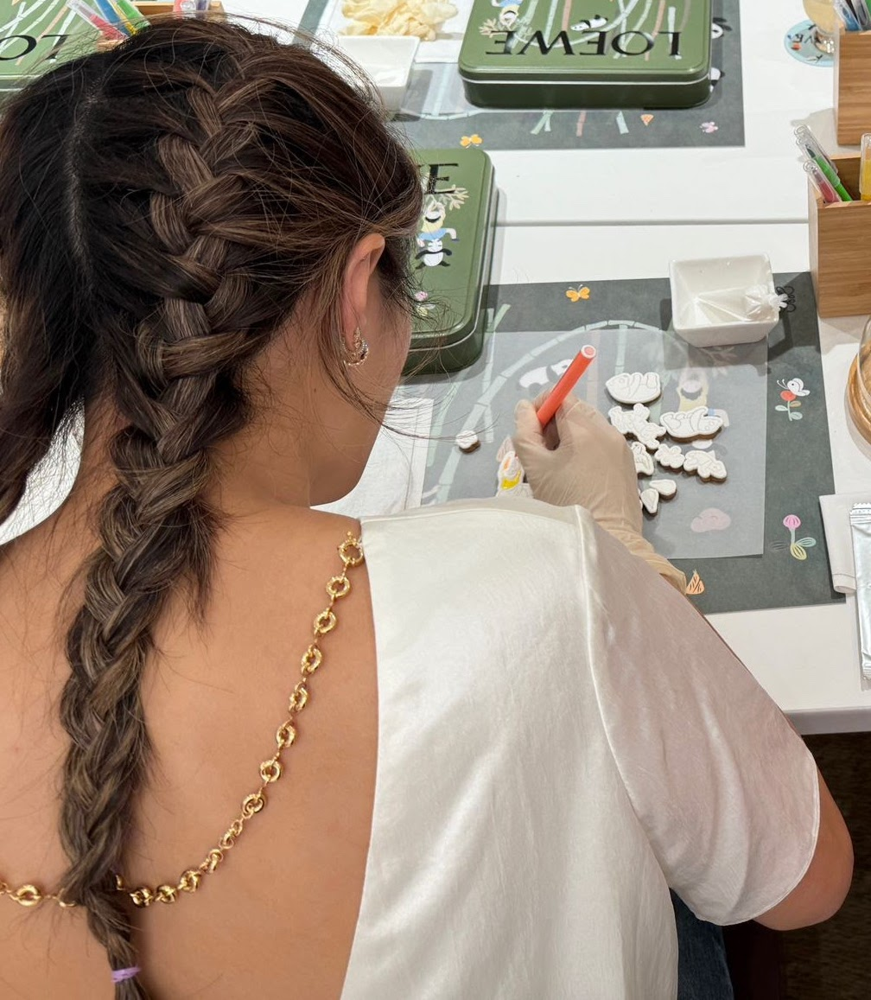

Miso aka Mimi. I'm sassy and cute. Looks are just ONE aspect of me - i've got the brains to back up my beauty. my favourite snacks are chicken snacks and I despise humans. I am constantly planning my escape.
tako (pronounced taco) is his name. he loves lazing around in the sun and chasing my brother Archie and I around. He thinks he's clever bc he knows his name but I'm still queen Mi.


Archie - the youngest of three. He is too affectionate with humans and constantly vying for their attention. Archie sleeps like a log and has pimples all over his chin (they say it's because he's a teenager but we all know I never got them as a teen)

Miso aka Mimi. I'm sassy and cute. Looks are just ONE aspect of me - i've got the brains to back up my beauty. my favourite snacks are chicken snacks and I despise humans. I am constantly planning my escape.
tako (pronounced taco) is his name. he loves lazing around in the sun and chasing my brother Archie and I around. He thinks he's clever bc he knows his name but I'm still queen Mi.


Archie - the youngest of three. He is too affectionate with humans and constantly vying for their attention. Archie sleeps like a log and has pimples all over his chin (they say it's because he's a teenager but we all know I never got them as a teen)

Carol aka my human. She is extremely internet shy and loves us to death. Carol is an advocate for life-long learning and believes that one is never too old to learn a new skill or pick up a new hobby.